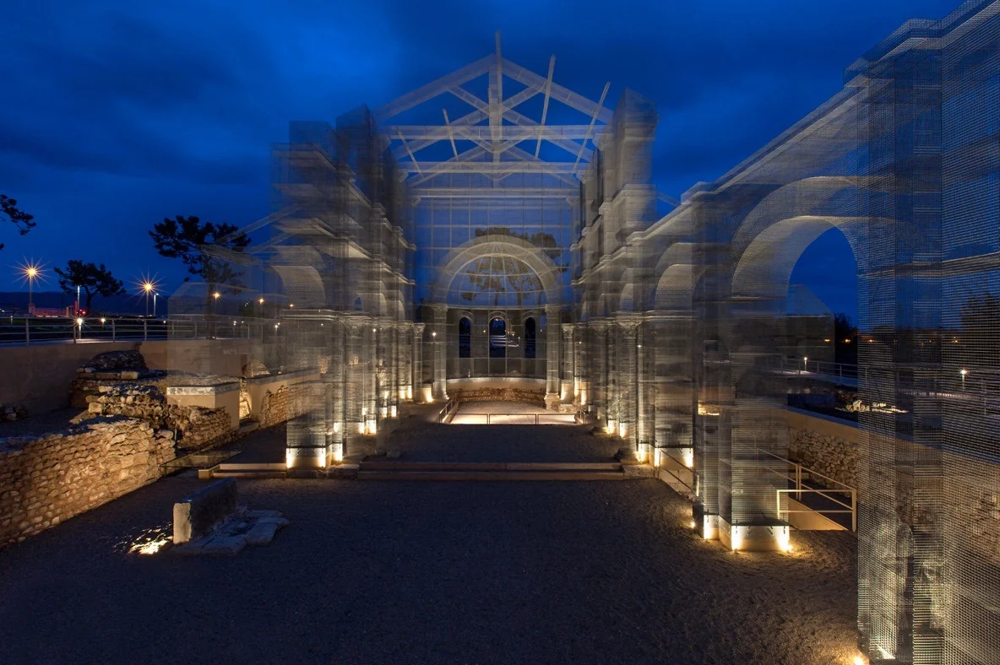

Manfredonia non è una tappa, è un punto di partenza. È la porta del Gargano, il primo respiro di mare e pietra che ti accoglie quando arrivi dalla pianura. Ma la maggior parte dei viaggiatori la attraversa senza fermarsi. Errore. Ecco cinque cose che vale la pena fare qui, e che nessuna guida turistica vi dirà.
1. Il Castello Svevo-Angioino al tramonto
Non andate al Castello di mattina come tutti. Andate un'ora prima del tramonto, quando la luce diventa ambra e il Golfo si tinge di rosa. Il Museo Nazionale del Gargano al suo interno merita, le stele daunie sono pezzi unici al mondo, ma è la passeggiata lungo le mura al crepuscolo che vi porterete dentro.
2. La Basilica paleocristiana di Siponto

A pochi minuti dal centro, tra gli ulivi, troverete una basilica del V secolo. Ma la vera sorpresa è sopra: l'installazione di Edoardo Tresoldi, una cattedrale di rete metallica che ricostruisce il volume della chiesa originaria. Di notte, illuminata, è un'esperienza quasi mistica. Di giorno, il contrasto tra la pietra antica e il metallo trasparente è architettura allo stato puro.
3. Il mercato del pesce al porto, la mattina presto
Svegliatevi presto, alle sei, massimo le sette. Al porto di Manfredonia, i pescatori scaricano il pescato della notte e inizia un rituale che si ripete da secoli. Non è un mercato per turisti: è dove comprano le nonne. Gamberi rossi, polpi, triglie, cozze. Il rumore, gli odori, le voci in dialetto. È il Gargano autentico, prima che si svegli il resto del mondo.
4. Aperitivo sul lungomare
Il lungomare di Manfredonia è lungo, generoso, e incredibilmente vuoto fuori stagione. Scegliete un bar con i tavolini affacciati sul golfo, ordinate un Spritz o un Primitivo di Manduria, e guardate il sole scendere dietro il promontorio. Non c'è fretta. Non c'è lista d'attesa. Solo il rumore delle onde e la luce che cambia.
5. Il tramonto sul Golfo, dal molo vecchio
L'ultimo consiglio è il più semplice. Camminate fino alla punta del molo vecchio. Portatevi solo un po' di pane e un pezzo di formaggio, se volete. Sedetevi sulle pietre calde e guardate il sole che cade nel Golfo. Non serve altro. È Manfredonia che si racconta da sola.
Vi aspettiamo a Casa e Bottega.
Prenota il tuo soggiorno